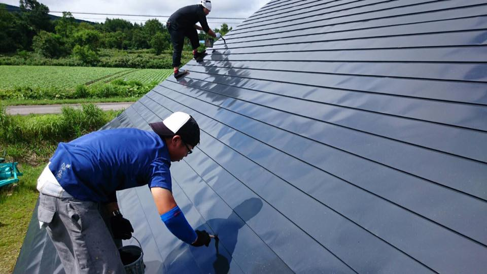
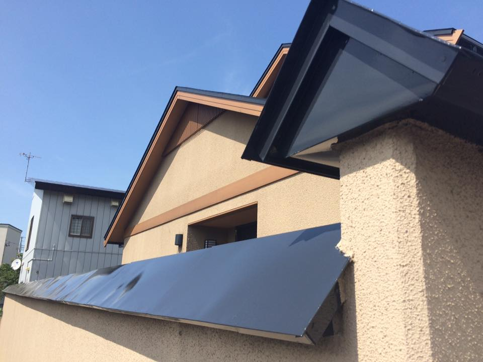
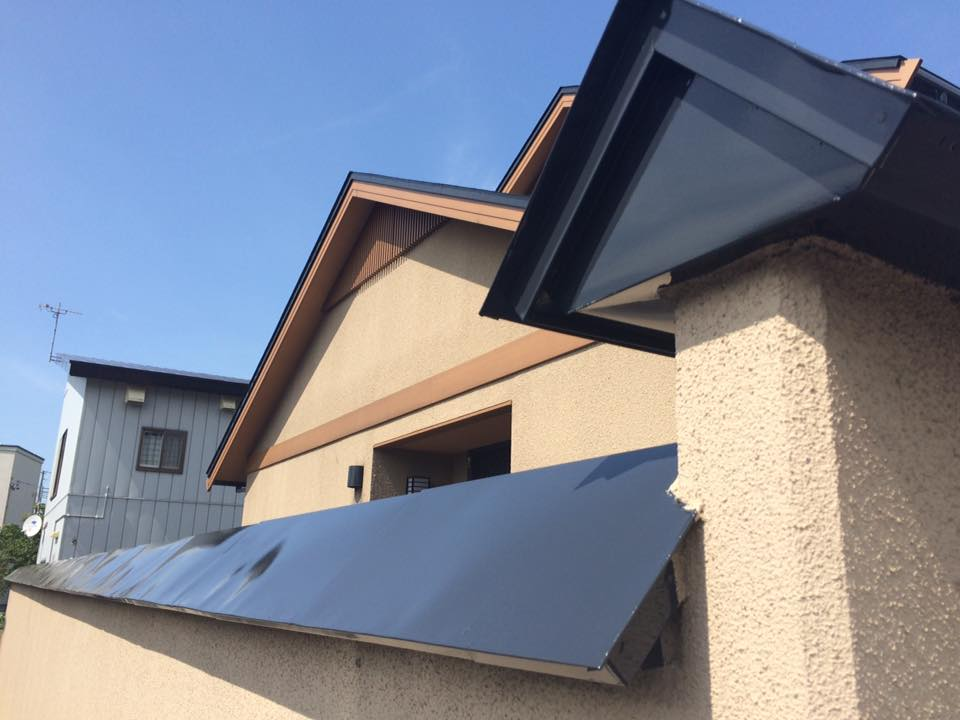

・外壁、屋根の塗装
アフターケアももちろんおこなっております。
・外壁、屋根の無料診断および見積もり
お客様の要望に合わせて見積もりを複数用意いたします。
・冬期間は屋根の雪下ろし、除雪なども行っております
作業の流れ
step1.注文
step2.見積り
耐久年数4年なら保証年数1年、耐久年数12年なら3年といった具合に様々なパターンをご用意しております。
step3.掃除
塗装の前に高圧洗浄機や様々な器具を使って掃除をします。


step4.塗装
まず下地を塗り、それから塗装を2回ほど行います。


step5.完成
完成です。完成までに屋根は1週間、外壁は3週間ほどかかります。
 
